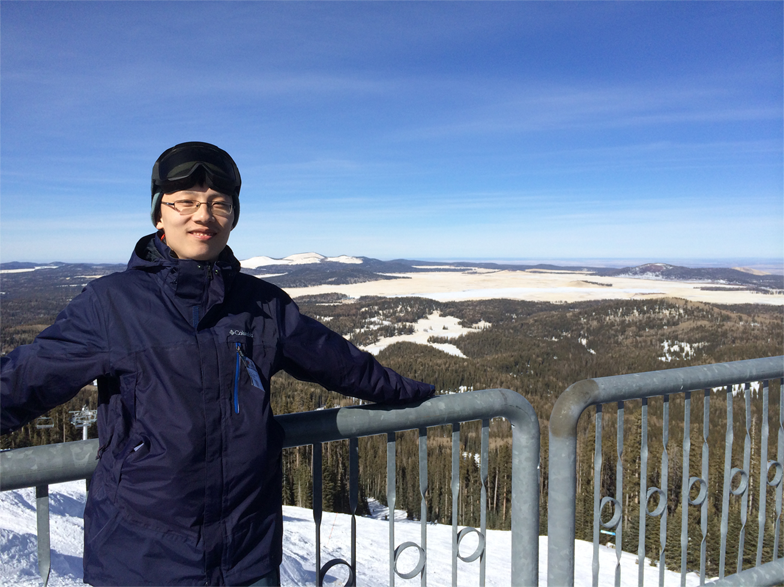

On the Sunrise Peak, Arizona, U.S.
On the Sunrise Peak, Arizona, U.S.
Recent Activities
3/4/14
New homepage online
My new homepage is uploaded onto ASU's general cluster. It is much more convenient than using Google App Engine. Besides, I forgot which account I used to create my old homepage :(
From today, the old homepage at yrzhmpg.appspot.com is fully abandoned. Any further update will appeat at this site.